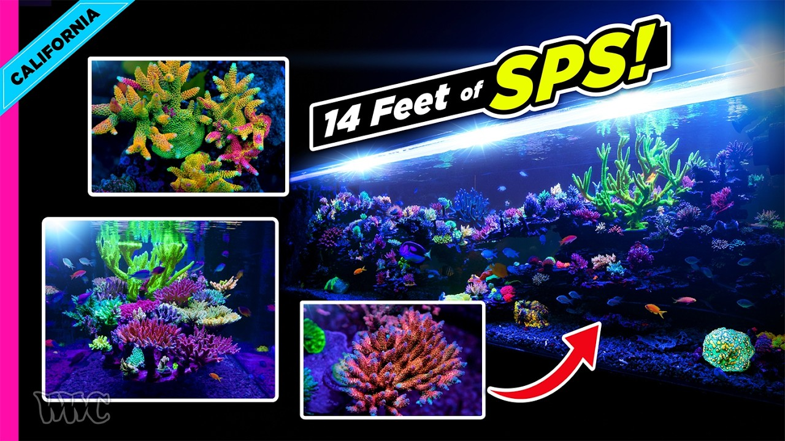

Friday, September 18, 2026 · 32 items · back issues
Howdy, it's Isaac again.
Happy Friday, reefing family, and welcome back to my Weekly Dive.
Heavy week; settle in.
Here are the biggest things worth knowing:
- Echoes of the past, warnings for the future: seven decades (1956–2025) of coral reef trajectories under repeated bleaching and local pressures in Addu Atoll, Maldives
- The chromosomal genome sequence of the rice coral, Montipora capitata (Dana, 1846) (Scleractinia: Acroporidae)
- Beyond warming: changes in copepod phenological timing in response to marine heatwaves before and during their blooms
- Seawater sprinkling promotes swim bladder inflation and reduces lordosis during mass-scale seed production in the leopard coral grouper Plectropomus leopardus
- Plus 28 more across husbandry & science, wild reefs, community
Let's dive into the news touching our hobby…
Community1
-
Connecting Hydros to the Aqua Insight: One App to Rule Your Reef Tank | Reefapalooza CA 2026
AvidAqua Insight now integrates with Hydros equipment through a new CoralVue API, unifying control of Apex, Hydros, Alkatronic, Mastertronic, and GHL platforms. Multi-controller compatibility reduces lock-in for hobbyists building mixed-brand systems.
Product13 min+1 similar SaltwaterAquarium.com · SaltwaterAquarium · Sep 13 · youtube.com
Husbandry & Science9
-
The chromosomal genome sequence of the rice coral, Montipora capitata (Dana, 1846) (Scleractinia: Acroporidae)
The rice coral Montipora capitata genome has been sequenced and assembled into 14 chromosomes with 44,675 protein-coding genes identified. Genomic resources enable research into coral physiology, stress response, and symbiosis.
+1 similar Wellcome Open Research · Crawford Drury et al. · Sep 17 · doi.org
-
Beyond warming: changes in copepod phenological timing in response to marine heatwaves before and during their blooms
Marine heatwaves disrupt copepod phenology and development timing, with cascading food-web impacts. Zooplankton timing shifts affect the foundation of reef productivity and aquarium water quality.
Frontiers in Marine Science — Journal · Luis Giménez · Sep 17 · frontiersin.org
-
Seawater sprinkling promotes swim bladder inflation and reduces lordosis during mass-scale seed production in the leopard coral grouper Plectropomus leopardus
Seawater sprinkling improves swim bladder inflation and reduces lordosis in leopard coral grouper seed production. The technique could improve survival rates and quality of cultured fish available to aquarists.
Fisheries Science · Yuji Fujikura et al. · Sep 17 · doi.org
-
The chromosomal genome sequence of the Caribbean fire coral, Millepora alcicornis Linnaeus, 1758 (Anthoathecata: Milleporidae) and its associated microbial metagenome sequences
The fire coral Millepora alcicornis genome and associated microbial metagenome have been sequenced. Genomic data on coral-symbiont interactions informs understanding of holobiont biology and stress tolerance.
Wellcome Open Research · Nikolaos V Schizas et al. · Sep 17 · doi.org
-
Spatially resolved gene expression analysis illuminates location-specific functions in the reef-building coral Pocillopora acuta
Spatial gene expression mapping in Pocillopora acuta reveals tissue-specific functions in feeding, defense, and skeleton formation. Understanding coral physiology at this resolution informs husbandry of difficult species.
PLoS ONE · Zoe Dellaert et al. · Sep 16 · doi.org
-
Coral spat survival on inshore reefs is enhanced by foul-release-coated seeding devices
Foul-release coating on seeding devices improves coral spat survival on degraded inshore reefs. Practical restoration technique addresses macroalgae and sediment fouling.
Coral Reefs · Jose Montalvo-Proaño et al. · Sep 14 · doi.org
-
Common census methods can lead to fundamentally different ecological interpretations of coral reef fish communities
Common reef fish survey methods produce different ecological interpretations, suggesting care is needed when comparing datasets across studies. This matters for anyone designing their own monitoring protocols or interpreting published reef health data.
Coral Reefs · Helen F. Yan et al. · Sep 14 · doi.org
-
Liz Weatherup and myself are at the Vibrio 2026 meeting in Berlin, Germany!
Vibrio coralliilyticus and V. pectenicida research presented at Vibrio 2026. Coral and sea-star pathogens remain critical to understanding disease outbreaks in wild and captive systems.
Blake Ushijima, Ph.D. — Bluesky · Sep 14 · bsky.app
-
Evaluating the impacts of site preparation and fragment size on coral outplanting success at a highly degraded reef site
Site preparation and fragment size affect outplanting success for Pocillopora acuta and Porites lutea. Optimization of restoration protocols directly improves reef recovery outcomes.
PeerJ · Yi Jiang et al. · Sep 14 · doi.org
Livestock & Corals3
-
Our PhD candidate, Samara, has interviewed 200+ fishers, traders, divers & community members across 8 coastal…
A doctoral researcher has interviewed 200+ fishers and traders across 8 Sri Lankan districts on seahorse fisheries and trade. Primary data on collection pressure and cultural context informs understanding of livestock sourcing.
Project Seahorse — Bluesky · Sep 17 · bsky.app
-
A new Dragon Search South Australia report led by Janine Baker has documented the loss of almost 1,700…
Harmful algal bloom killed nearly 1,700 seadragons, hundreds of pipefish and seahorses in South Australia. These ornamental species face emerging disease pressures aquarists should monitor.
Great Southern Reef Foundation — Bluesky · Sep 15 · bsky.app
-
Social context shapes acoustic signalling in the territorial damselfish Stegastes fuscus
Study characterizes acoustic signaling in the damselfish Stegastes fuscus across social contexts, showing sounds vary with behavior. The work contributes to understanding damselfish communication but has limited practical aquarium application.
Journal of Fish Biology · Aléxia A. Lessa et al. · Sep 14 · doi.org
Wild Reefs18
-
Echoes of the past, warnings for the future: seven decades (1956–2025) of coral reef trajectories under repeated bleaching and local pressures in Addu Atoll, Maldives
Seven decades of Maldives reef data show bleaching and local pressures reshaping coral communities. Long-term monitoring proves essential for predicting reef futures under climate stress.
Biological Conservation · Irene Pancrazi et al. · Sep 16 · doi.org
-
Relationships Between Oceanic Primary Production, Human Habitation and Variation in the Life‐History Traits of Coral Reef Fishes Across the Northern Line Islands
Study examines how oceanic upwelling and human habitation shape life-history traits of reef fish across the Northern Line Islands. Understanding these relationships helps predict how reefs respond to combined natural and anthropogenic stressors.
Fish and Fisheries · Brian Zgliczynski et al. · Sep 14 · doi.org
-
Local baselines reveal elevated groundwater nutrients, localised coastal enrichment, and broadly oligotrophic reef conditions in Laamu Atoll, Maldives
A baseline study of groundwater and coastal nutrient enrichment in the Maldives reveals oligotrophic reef conditions with localised coastal impacts. Nutrient dynamics shape reef ecology, and monitoring frameworks like this establish the environmental context for understanding reef resilience.
Frontiers in Marine Science — Journal · Alexander W. Tudhope · Sep 18 · frontiersin.org
-
Amid the destruction of Hurricane Maria, some species not only survived, but thrived
Invasive Halophila stipulacea from the Red Sea thrived after Hurricane Maria in the Caribbean, enabled by climate disruption. Invasive seagrass threatens reef ecosystems and import dynamics worth tracking.
UBC Oceans — Bluesky · Sep 17 · bsky.app
-
Late middle Pleistocene fossil coral reef growth history in the subtropical Northwest Pacific
Fossil coral reefs in the Ryukyu Islands reveal Pleistocene climate and sea-level change impacts on reef growth. High-latitude coral ecology under past climate extremes informs modern reef resilience questions.
Progress in Earth and Planetary Science · Riho Tomatsu et al. · Sep 17 · doi.org
-
Why bother? What kind of value do Caribbean coral reefs have?
A study examines the economic and ecological value of Caribbean coral reefs. Understanding reef value is foundational to conservation policy affecting collection and trade.
Coral Reefs · R. Scott Winters · Sep 17 · doi.org
-
Mapping cumulative impacts of invasive alien species on ecosystem services
Researchers developed CIMPAL-ES, an index mapping cumulative impacts of invasive alien species on marine ecosystem services. Understanding IAS impacts across reef systems informs conservation priorities and management of species already present in aquarium trade.
Frontiers in Marine Science — Journal · Stelios Katsanevakis · Sep 18 · frontiersin.org
-
Drone-Transect: a non-destructive operational protocol for drone-based conservation studies on intertidal coral reefs
Drone-Transect is a non-destructive protocol for surveying intertidal coral abundance and species distribution using aerial imagery. The method provides monitoring tools relevant to understanding wild reef condition.
Marine and Fishery Sciences (MAFIS) · Lynick Jones et al. · Sep 17 · doi.org
-
Following the storm, the invasive seagrass rapidly recovered and spread throughout the shallow Caribbean…
An invasive seagrass rapidly recovered and spread across shallow Caribbean reefs following a storm. Invasive-species dynamics and climate-driven range expansion directly affect Caribbean reef ecosystems.
UBC Oceans — Bluesky · Sep 16 · bsky.app
-
Plastic debris in the Ecuadorian shoreline, coastal and deep-water zones of the eastern Pacific margin
A six-year study documents plastic debris from shallow shorelines to abyssal depths off Ecuador, establishing transport patterns across connected zones. Plastic pollution directly degrades wild reef ecosystems and informs conservation.
Frontiers in Marine Science — Journal · Jean-Noel Proust · Sep 17 · frontiersin.org
-
Scotland has opened a consultation on fisheries management for 76 MPAs and 90 proposed PMF areas, as…
Scotland opened a consultation on fisheries management for 76 marine protected areas while 95% of inshore waters remain open to bottom trawling. Trawling bans affect wild reef conservation and long-term ecosystem health.
UBC Oceans — Bluesky · Sep 16 · bsky.app
-
Habitat Suitability and Glacial Refugia of the Turbid-Water Coral Turbinaria peltata Across the Indo-West Pacific Ocean Based on MaxEnt Modeling
MaxEnt modeling maps Turbinaria peltata habitat suitability and glacial refugia across Indo-West Pacific. Predicting turbid-water coral distribution under climate change informs conservation priorities.
Biology · Yanping Zhang et al. · Sep 15 · doi.org
-
A new bubblegum coral from the Nazca Ridge reveals chitin as the structural scaffold of skeleton-less Paragorgia colonies
New bubblegum coral species from the Nazca Ridge contains visible chitin in its tissues, explaining how skeleton-less Paragorgia colonies maintain structural integrity. Understanding coral skeletal biology advances knowledge of octocoral adaptation.
Scientific Reports · Juan A. Sánchez et al. · Sep 13 · doi.org
-
5️⃣ Number of times #OceanAcidification was discussed during the AK Fisheries 🇺🇸 Senate debate #AlaskaSky…
Ocean acidification was discussed five times during an Alaska fisheries senate debate. Advocacy attention to ocean acidification reflects growing policy recognition of a core challenge to reef systems.
Ocean Acidification Research Center — Bluesky · Sep 16 · bsky.app
-
Occurrence, distribution, and tissue concentrations of organochlorine pesticides in marine sediments, bivalves, and two reef fish (Siganus sutor and Lethrinus nebulosus) from coastal waters of Unguja Island, Tanzania: baseline levels, sediment-quality screening and dietary risk
Organochlorine pesticides detected in Tanzania coastal sediments and reef fish tissue. Persistent pollutants in tropical reef systems establish baselines for ongoing monitoring.
Frontiers in Marine Science · Hassan M.A. Hassan et al. · Sep 15 · doi.org
-
Our Gulf of Alaska #OceanAcidification buoy site has mostly observed below average sea surface temperatures…
A Gulf of Alaska buoy has recorded below-average sea surface temperatures in 2026 compared to its full historical record. Regional temperature trends inform understanding of oceanographic conditions affecting reef systems globally.
Ocean Acidification Research Center — Bluesky · Sep 16 · bsky.app
-
Ultrasonic parametric investigation of a coral slab: prospects for in situ non-destructive testing of coral microatolls.
Ultrasonic testing proposed for non-destructive coral microatoll analysis. Alternative to destructive sampling enables long-term sea-level and climate research.
Acta Acustica · Sérine Madji et al. · Sep 14 · doi.org
-
Distribution and Diversity of Coral Growth Forms at Different Depths in Badi Island, South Sulawesi, Indonesia
Researchers mapped coral growth forms and physicochemical conditions at Badi Island to assess reef ecosystem baseline conditions. The depth-dependent distribution patterns inform understanding of coral adaptation to local conditions.
Nekton · Samuel Alfaref Sembiring · Sep 14 · doi.org
Resource

15 Months Later: Inside Ivan’s 1,500-Gallon SPS ReefA 1,500-gallon SPS reef matures over 15 months with detailed documentation of calcium, trace elements, and nutrient management. The behind-the-scenes look at large-system maintenance and equipment choices offers practical insights for scaling aquarium husbandry.
23 min World Wide Corals · Sep 17 · youtube.com
Get it in your inbox
One email a week, free. Every item links to its source.